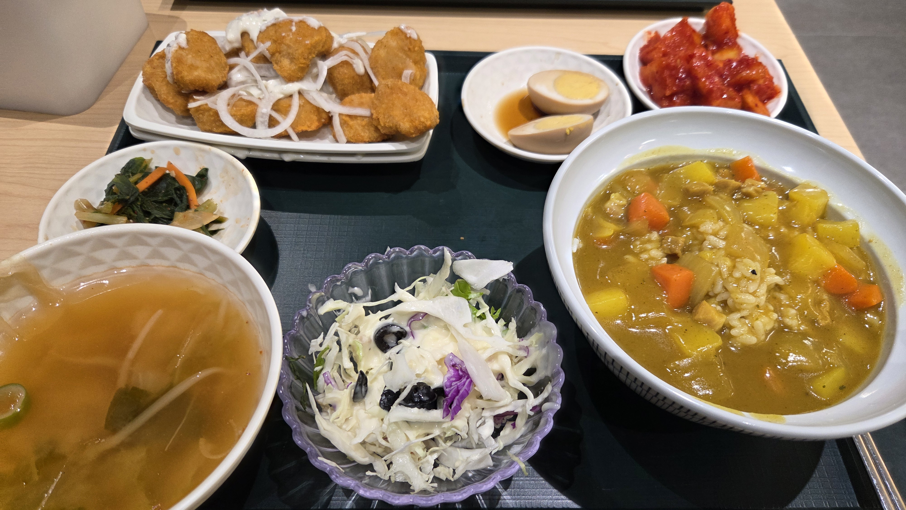
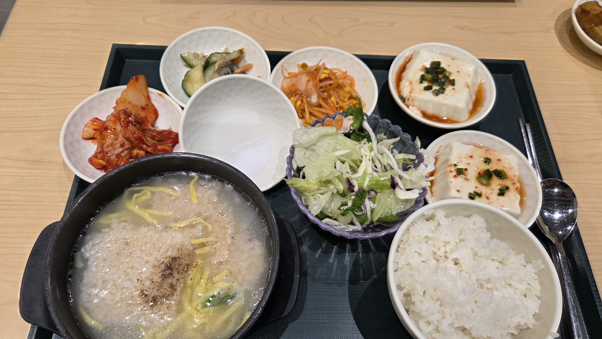
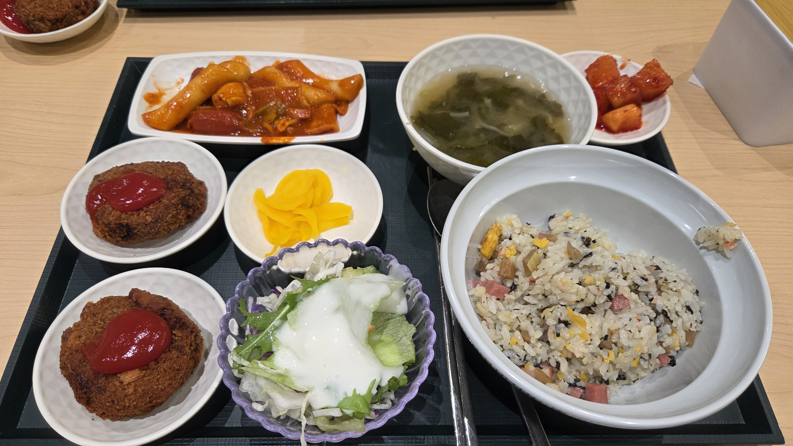
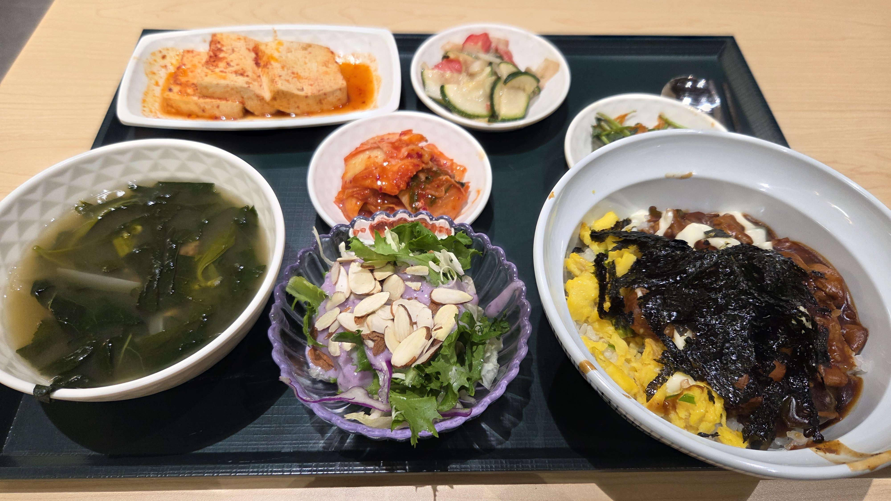
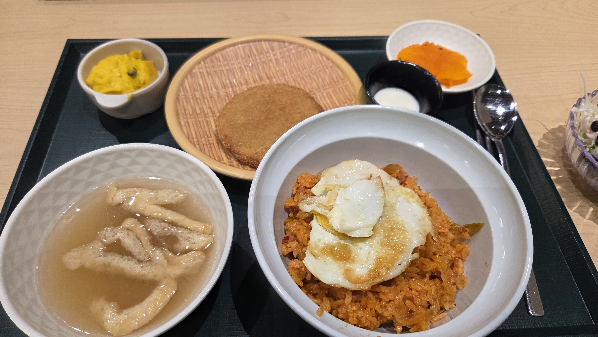
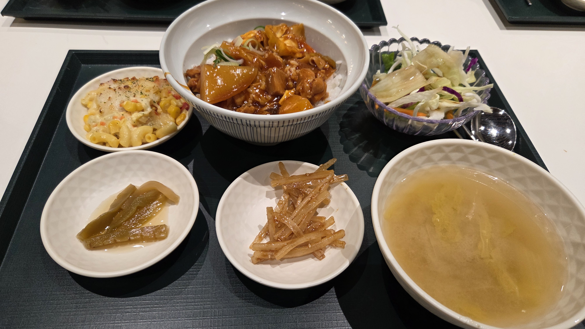
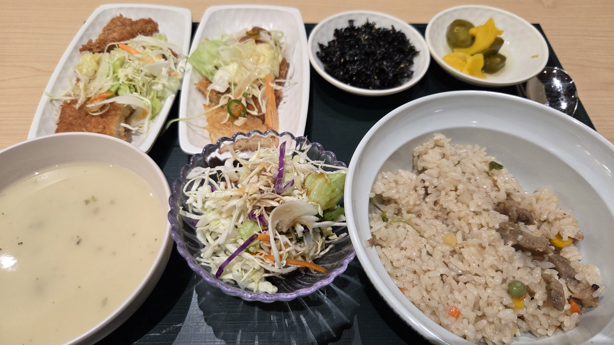
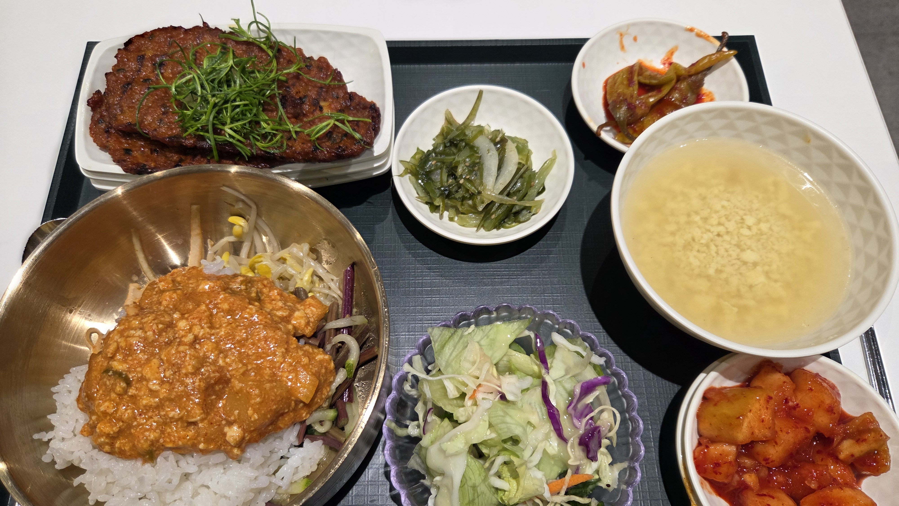

인터스텔라
지구의 환경이 점점 악화되어 더 이상 인류가 살아가기 어려워진 상황에서, 새로운 삶의 터전을 찾기 위해 우주로 떠나는 이야기를 담은 작품입니다. 웜홀을 지나 여러 행성을 탐사하며 인류의 생존 가능성을 찾아가는 과정이 긴장감 있게 전개되고, 그 속에서 가족에 대한 사랑과 희생, 시간의 상대성까지 깊이 있게 그려져 더욱 인상 깊었습니다. 단순한 우주 탐사를 넘어 인간의 감정과 선택을 함께 보여줘서 오래 기억에 남는 작품입니다.

열띤 토론을 좋아하는 개발자
안녕하세요 !
건설적인 토론을 통해 좋은 결과가 나온다고 생각하는 개발자입니다 !
| 이름 | 정용태 |
|---|---|
| MBTI | ENTP |
| 취미 | 운동, 개발, 게임, 음악, 영화, 위스키 |
| 좋아하는 음식 | 김치찜, 판모밀 |
구내식당 갤러리








지구의 환경이 점점 악화되어 더 이상 인류가 살아가기 어려워진 상황에서, 새로운 삶의 터전을 찾기 위해 우주로 떠나는 이야기를 담은 작품입니다. 웜홀을 지나 여러 행성을 탐사하며 인류의 생존 가능성을 찾아가는 과정이 긴장감 있게 전개되고, 그 속에서 가족에 대한 사랑과 희생, 시간의 상대성까지 깊이 있게 그려져 더욱 인상 깊었습니다. 단순한 우주 탐사를 넘어 인간의 감정과 선택을 함께 보여줘서 오래 기억에 남는 작품입니다.
래퍼 에미넴의 실제 언더그라운드 시절을 모티브로 만든 것으로 디트로이트 슬럼가의 빈민층에서 자라온 1990년대의 에미넴과 수많은 사람들의 모습이 나온다. 영화 제목은 디트로이트를 동서로 가로지르는 도로 8 마일에서 따왔는데, 이 도로는 디트로이트에서 흑인과 백인 거주구역의 경계선 역할을 한다.
오늘 새롭게 배운 것들을 기록합니다.